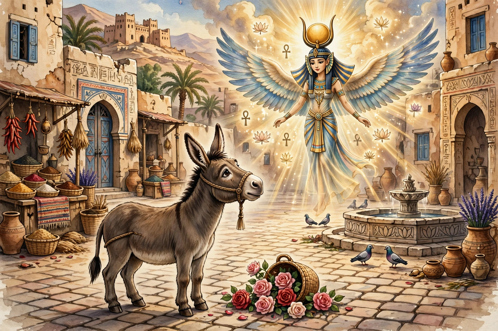

From Wikipedia, the free encyclopedia
| Born | c. AD 124 Madauros, Numidia (modern M'Daourouch, Algeria) |
|---|---|
| Died | After AD 170 |
| Occupation | Novelist, rhetorician, philosopher |
| Language | Latin |
| Notable works | The Golden Ass, Apologia |
Apuleius (c. AD 124 – after 170) was a Latin-language prose writer, Platonist philosopher and rhetorician from Numidia in Roman North Africa. He is best known for his picaresque novel the Metamorphoses, commonly called The Golden Ass — the only Latin novel to survive complete.

Lucius, the hero of The Golden Ass, transformed into a donkey.
Apuleius was born at Madauros, a Roman colony in Numidia; he called himself "half Numidian, half Gaetulian". He studied at Carthage and Athens, travelled widely in the Greek East, and practised as an advocate and public lecturer. At Oea (modern Tripoli) he married a wealthy widow, Pudentilla, whose relatives accused him of winning her by magic. His brilliant surviving defence speech, the Apologia (or De magia), is a major source for his life and for Roman ideas about magic. In later life he held a priesthood at Carthage and received public honours.
The Golden Ass tells how its narrator Lucius, fascinated by magic, is accidentally transformed into a donkey and undergoes a series of comic, erotic and brutal adventures — overhearing tales such as the inset story of Cupid and Psyche — before being restored by the goddess Isis in the climactic Book 11 and initiated into her cult. The novel blends Milesian tale, satire, romance and religious allegory.
Other surviving works include the Florida, a collection of rhetorical excerpts; the philosophical treatises De deo Socratis (On the God of Socrates), De Platone et eius dogmate and De mundo; and the Apologia. Several works, including poems and translations, are lost.
Apuleius was read and admired in late antiquity — Augustine discussed him seriously — and The Golden Ass influenced later picaresque and comic fiction from Boccaccio to Cervantes and Fielding. His elaborate, archaizing Latin style was long distinctive.